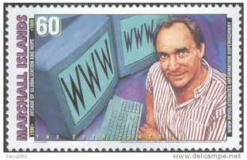

Hypertext Markup Language (HTML) is the standard markup language for creating web pages and web applications
웹사이트의 모습을 기술하기 위한 마크업 언어. 프로그래밍 언어가 아니라 마크업 정보를 표현하는 마크업 언어로[1] 문서의 내용 이외의 문서의 구조나 서식 같은 것을 포함한다. 보면 알겠지만 애초에 이름 HTML의 ML이 마크업 언어라는 뜻이다. 웹사이트에서 흔히 볼 수 있는 htm이나 html 확장자가 바로 이 언어로 작성된 문서다. 최초 제안자는 CERN의 물리학자 티머시 J. 버너스리이다.
URL, HTTP, WWW의 전신인 Enquire 등도 그가 세트로 개발하고 제안했다. TCP/IP 통신규약을 만든 빈턴 G. 서프(Vinton Gray Cerf)와 함께 인터넷의 아버지로 불린다. 나무위키에서는 아래와 같이 내용을 집어넣어 HTML을 적용시킬 수 있지만 도움말은 권장하지 않는 문법이고, 지원 종료 가능성이 있는 문법이므로 나무위키에서는 HTML 태그를 사용하지 않는 것을 추천한다.